Horizon10 is a research dashboard that runs 3,584 stocks — the entire NSE main board plus the whole US S&P 1500 — through the same scoring engine, then asks eight legendary investing frameworks what they think of each one. It runs entirely on your own computer.
A research tool — not financial advice. It shows its reasoning so you can disagree with it.
Everything lives on your machine. No account, no subscription, no data leaves your laptop except the requests that fetch stock prices.
Start Horizon10.bat
It opens your browser at http://localhost:8000. Keep the little black window open while you use the app — closing it stops the server.
One program serves both the website you look at and the data behind it, so there is nothing else to start.
cd backend
python -m venv venv
venv\Scripts\python.exe -m pip install -r requirements.txt
venv\Scripts\python.exe build_universe.py # collect every listed stock
venv\Scripts\python.exe warm_full.py # download the data (~75 min)
cd ..\frontend
npm install
npm run buildlocalhost:8000 just means "a website served by
my own computer, on door number 8000". Nobody else can open that link — it isn't on the internet.
Press Win + R, type shell:startup, and drop a shortcut to
Start Horizon10.bat in the folder that opens.
Click any panel to open the deep dive. Skim the headlines first — expand only what you care about.
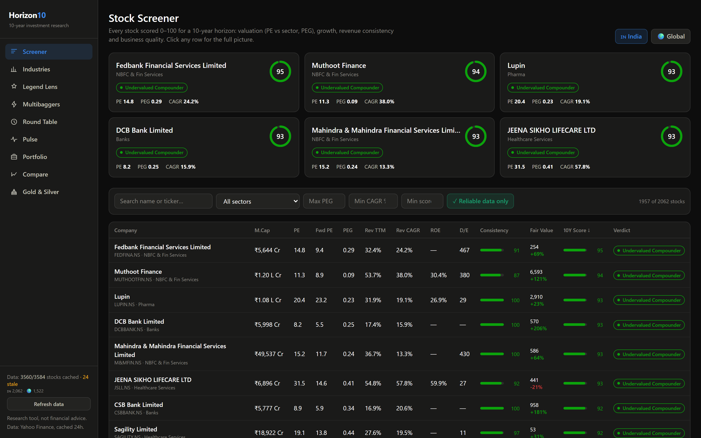
A ranked table of every stock. The six cards on top are the best-scoring opportunities right now; the table below lets you sort by any column and filter by sector, PEG, growth or score.
How to read a row: PE is how many years of current profit
you're paying for the share. PEG divides that by growth — under 1 usually means
growth isn't fully priced in yet. Rev CAGR is the average yearly sales growth.
Fair Value is what the old-school formulas say it's worth, and the coloured
percentage is how far today's price sits from that.
The "Reliable data only" button is on by default. Tiny companies often publish almost nothing, and scoring them on two numbers would be dishonest. Click it to show the whole market anyway — nothing is hidden from you, it's just ranked separately.
Sectors ranked by the average score of the companies inside them. Good investors often say picking the right industry does half the work — this screen is that shortlist, and it shows the top three stocks inside each sector so you can jump straight in.
Only well-covered companies vote on a sector's score, so one obscure micro-cap can't drag an entire industry up or down.
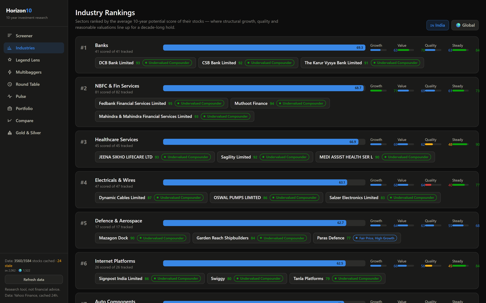
Two gauges at the top show the Buffett Indicator — the total value of a stock market divided by the size of its economy. Buffett called 75–90% reasonable. India sits around 121%; the US is near an all-time-high 237%.
Below, every stock is valued using the legends' own formulas, and labelled UndervaluedFairly ValuedExpensive.
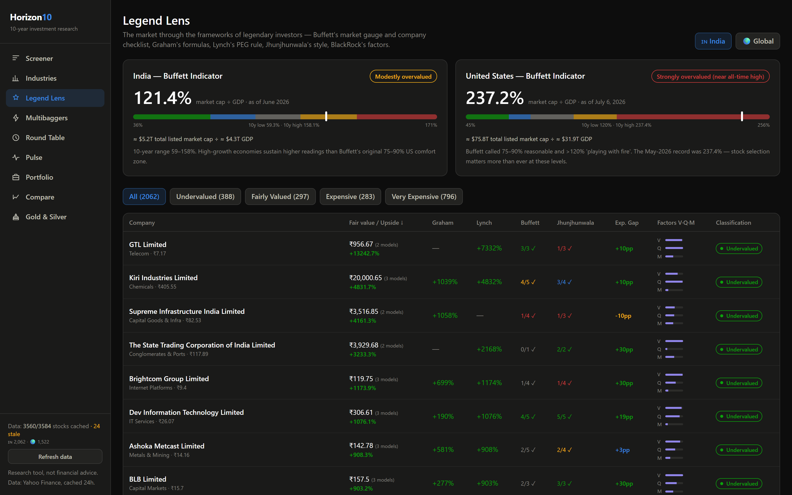
Ten-baggers almost always start small. This screen blends the rules of five investors famous for finding them and lists, for each stock, exactly which rules it triggers — for example "Lynch fast grower: revenue +112%" or "Promoter holding 68%".
"Prime Multibagger Setup" needs a high score and a small or mid size. A giant company can compound, but it rarely multiplies ten times.
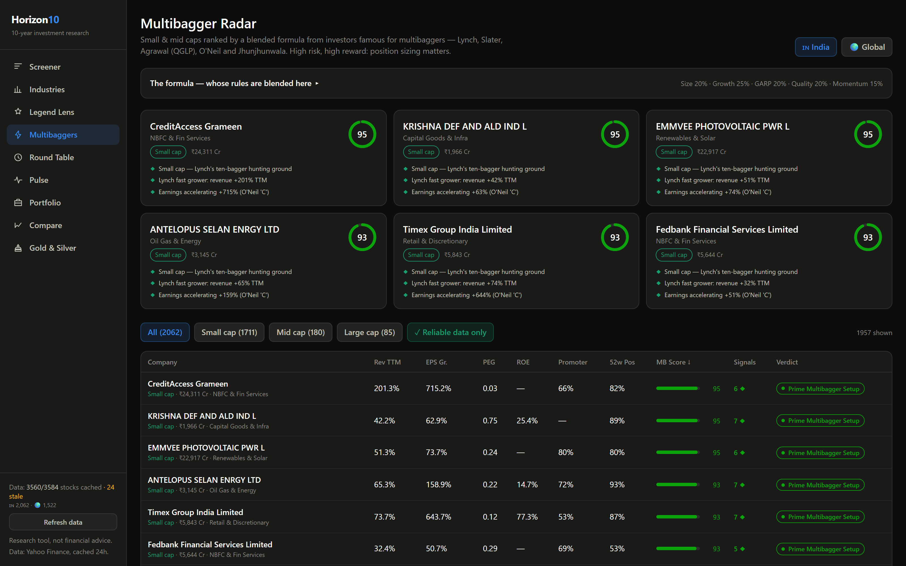
Every rating service squeezes a stock into one number. This one refuses to. Eight frameworks vote independently, and the disagreement between them is shown as its own signal.
High agreement + cheap = a conviction idea. High disagreement = a "battleground" — Graham may call it wildly overpriced while Buffett's checklist calls it a wonderful business. That argument is exactly what will decide the outcome, so it's worth your homework.
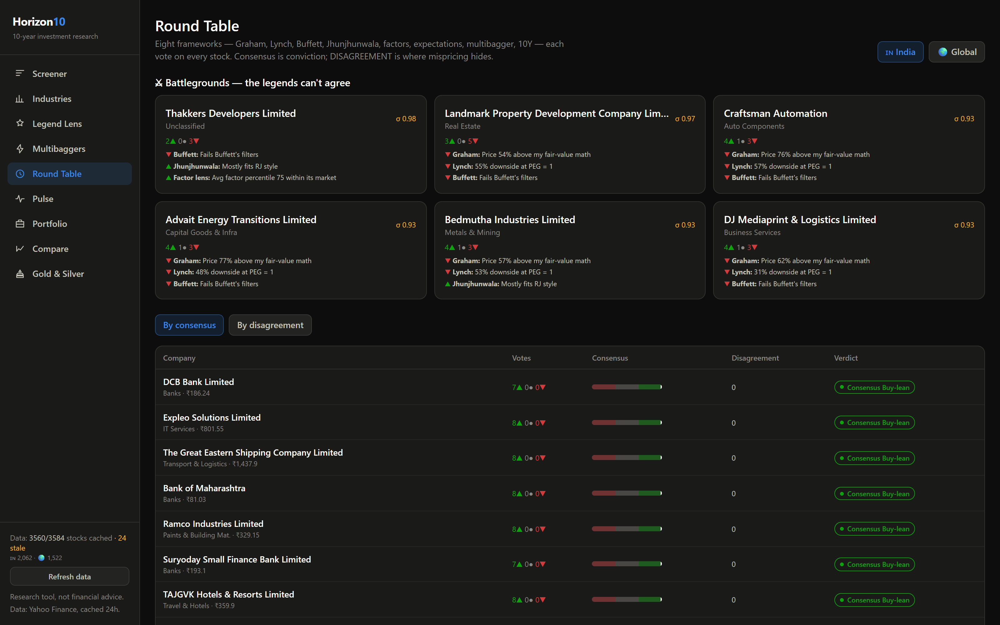
Click any stock anywhere to get its full story on one page:
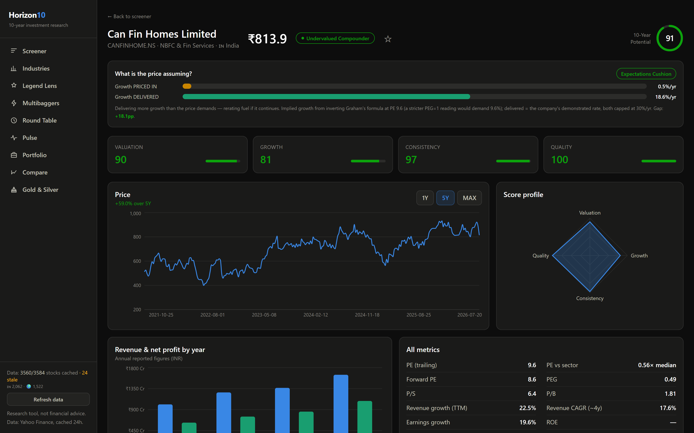
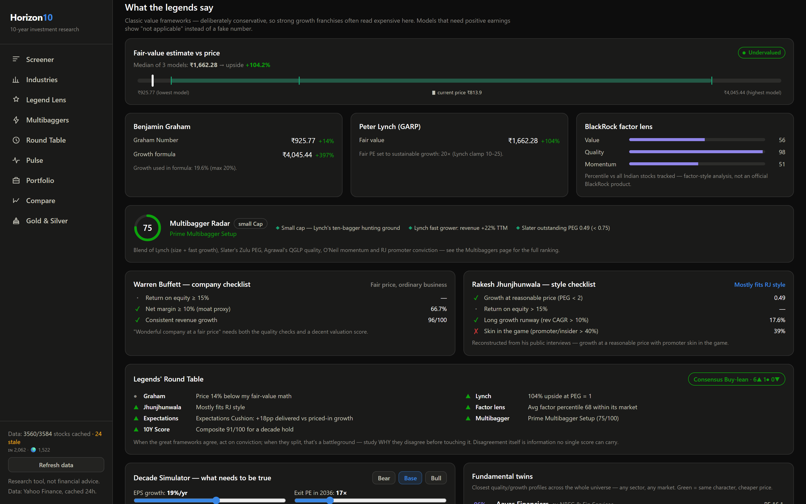
Add what you own (quantity and buy price) and see it through every lens at once: live profit and loss, your value-weighted quality score, how concentrated you are in one sector, and a red flag on any holding that is very expensive or priced for perfection.
Holdings are saved in a plain file on your computer. Foreign holdings are converted at the live dollar-rupee rate. There's a watchlist too — the ☆ on any stock page.
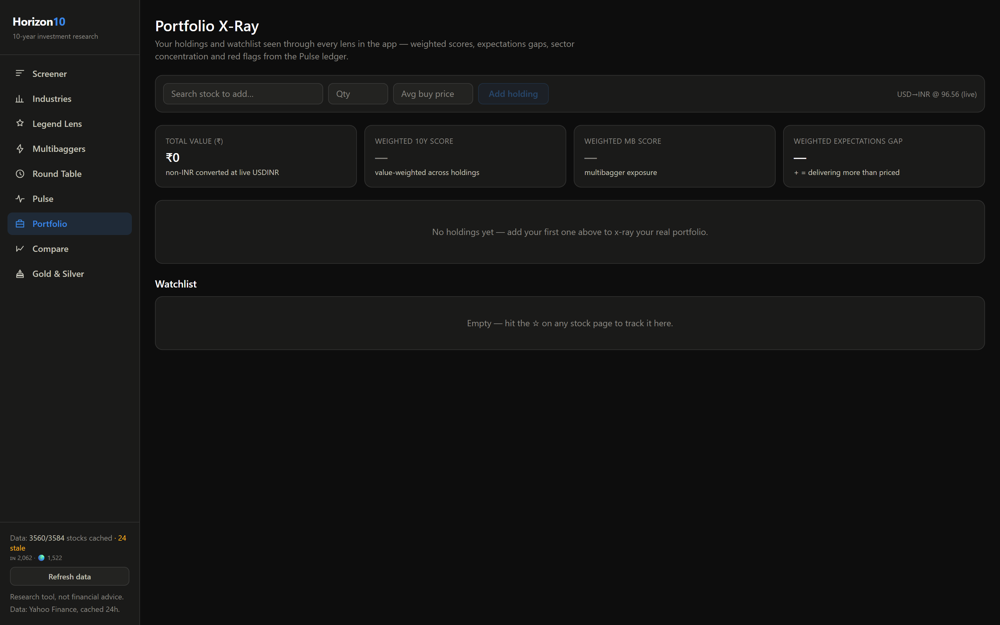
Every refresh saves a dated snapshot of all 3,584 scores. Pulse compares snapshots and tells you what moved and why — for example "Amazon: Expensive → Fairly Valued (PE 31.3 → 29.3)". It's a research desk's morning note, except computed rather than written.
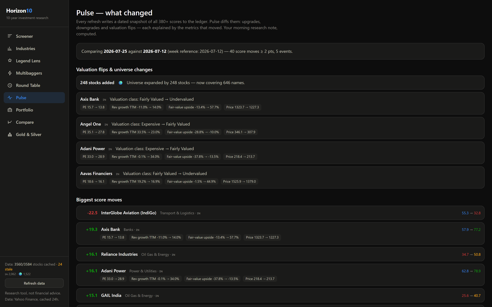
Ten-year trends for gold and silver in both dollars and rupees, the classic gold-to-silver ratio against its own average, and a momentum signal. Gold earns nothing, but it cushions crashes and currency slides — the page says exactly that.
Compare puts 2–4 stocks side by side, from either market, with performance rebased to 100 so you compare like with like.
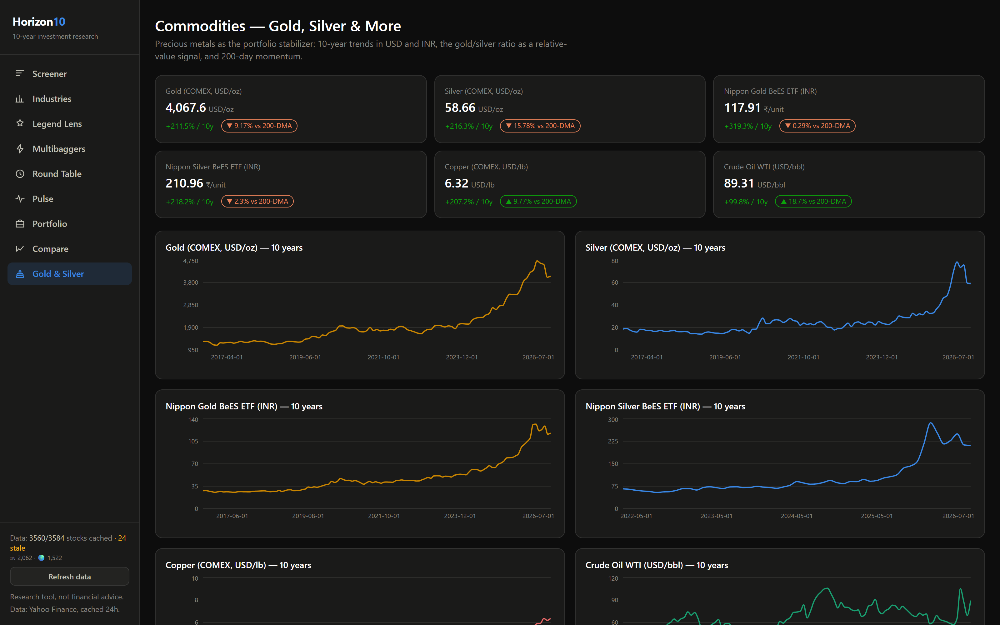
Every stock gets one number from 0 to 100. It is the weighted average of four questions — and each part is visible on the stock page, so you can see why a score is what it is.
| Question | Weight | What it looks at |
|---|---|---|
| Is it fairly priced? | 30% | PE compared with its own sector, PEG, price-to-sales |
| Is it growing? | 30% | Sales growth this year, 4-year sales growth rate, profit growth |
| Is the growth steady? | 20% | How many years grew, and how bumpy the ride was |
| Is it a good business? | 20% | Return on equity, profit margins, debt, cash generation |
Compared to its own kind. A bank is judged against banks, not against software companies. Valuation uses each sector's own median, so "expensive" always means expensive for that industry.
Missing data is never guessed. If a number isn't published, that part is skipped and the rest re-weighted — and the stock carries a visible completeness percentage. Anything under 60% is flagged "thin data".
Some of these are real published formulas. Some are styles reconstructed from what the investor said and did. The app labels which is which, because pretending a style is a formula would be dishonest.
| Lens | What it asks | Type |
|---|---|---|
| Benjamin Graham | What's the most a careful buyer should pay? | real formula |
| Peter Lynch | Is the growth cheap relative to its speed? | real rule |
| Warren Buffett | Is this a wonderful business at a fair price? | principles checklist |
| Rakesh Jhunjhunwala | Growth, quality, and does the promoter own a lot? | style checklist |
| Jim Slater | Small company, PEG under 0.75? | real rule |
| Raamdeo Agrawal | Quality, Growth, Longevity, Price (QGLP) | principles |
| William O'Neil | Are profits accelerating and is it a market leader? | CANSLIM traits |
| BlackRock | How does it rank on Value, Quality, Momentum? | factor style |
Graham Number — his ceiling on a defensive buy:
Graham's growth formula:
Peter Lynch — a fair PE equals the growth rate (so PEG = 1):
The final fair value is the middle of whichever of these apply — and the app shows the full range, so a wide spread warns you the models disagree.
| Ingredient | Weight | Whose idea |
|---|---|---|
| Room to grow (small = better) | 20% | Lynch — "big companies make small moves" |
| Growth engine | 25% | Lynch fast-growers + Agrawal's QGLP |
| Growth at a reasonable price | 20% | Slater's Zulu Principle (PEG < 0.75) |
| Business quality & balance sheet | 20% | Agrawal's QGLP quality |
| Momentum & conviction | 15% | O'Neil's CANSLIM + Jhunjhunwala on promoters |
Trendlyne, Tickertape, Screener.in, Simply Wall St, GuruFocus and Stockopedia all cover the basics. These four are the parts I couldn't find anywhere else.
Every research firm publishes their growth forecast. This flips the question: what growth is already baked into today's price? Then it compares that with what the company actually delivers.
Verdicts run from Expectations Cushion (delivering more than the price asks) to Extreme Hope (priced for a miracle).
Ratings collapse everything into one number, hiding the argument. The Round Table keeps the eight votes separate and measures the spread, surfacing battleground stocks where the frameworks fight.
Was the last five years' gain earned by the business, or just by the market agreeing to pay a higher multiple? One is durable; the other reverses. Institutional technique, absent from retail tools.
Finds companies with the same quality-and-growth fingerprint across sectors and across countries — then flags the ones trading cheaper. Everyone else only shows you same-sector peers.
Rather than hiding its assumptions inside a "fair value", this asks you to set them. Drag two sliders — how fast profits grow, and what multiple the market pays in 2036 — and it shows your yearly return and what ₹1,00,000 becomes.
Bear, Base and Bull presets are pre-filled from the stock's own record and from the growth already priced in. The point isn't prediction; it's seeing which assumption your money is actually betting on.
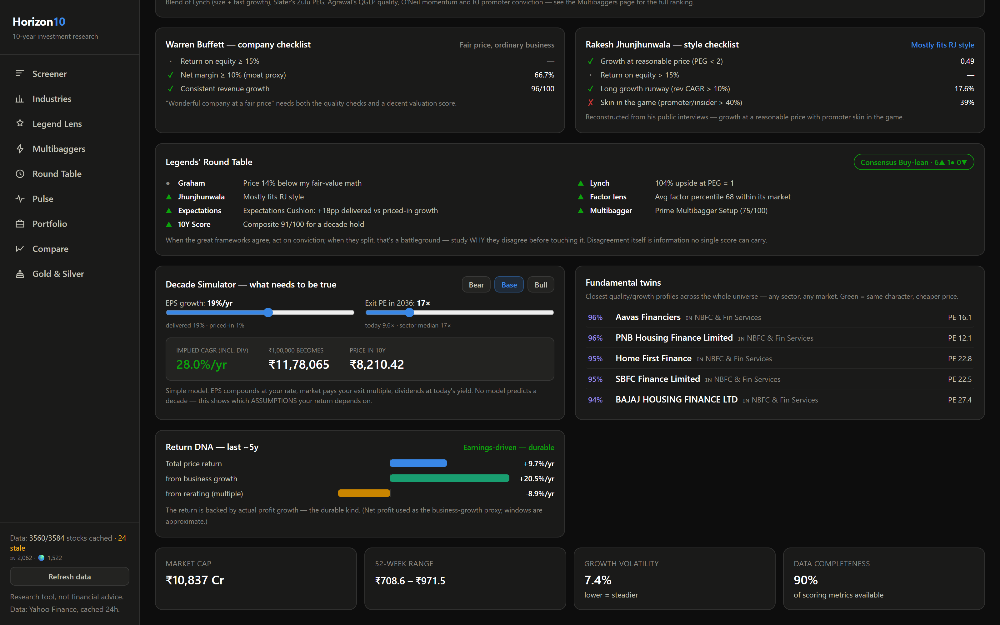
Two pieces, one address. A Python program does the thinking; a React website does the showing;
the Python program also serves the website, so localhost:8000 is all you ever need.
India Stock Market/
├─ Start Horizon10.bat ← double-click this
├─ backend/ ← Python: data + all the maths
│ ├─ universe.py full list of stocks (curated + auto)
│ ├─ build_universe.py collects every NSE + S&P 1500 listing
│ ├─ warm_full.py downloads the data, politely
│ ├─ fetcher.py talks to Yahoo Finance, caches to disk
│ ├─ scoring.py the 10-year score
│ ├─ legends.py Graham, Lynch, Buffett, Jhunjhunwala, factors
│ ├─ multibagger.py the blended multibagger formula
│ ├─ expectations.py what growth the price assumes
│ ├─ roundtable.py the eight votes + disagreement
│ ├─ twins.py fundamental look-alikes
│ ├─ ledger.py daily snapshots → the Pulse feed
│ └─ main.py the web server + API
├─ frontend/ ← React: the screens you look at
└─ docs/ ← this page + screenshotsThe stock list comes from official sources: NSE's own listing file for India, and Wikipedia's S&P 500/400/600 constituent tables for the US. No hand-typing, so nothing is forgotten.
The data itself was the hard part. Three real problems and their fixes:
Going from 381 stocks to 3,584 broke things that were invisible at small scale:
| Screen data | Size | Time |
|---|---|---|
| Screener (India, 2,062 stocks) | 2.4 MB | 16 ms |
| Round Table | 1.8 MB | 12 ms |
| Legend Lens | 1.7 MB | 21 ms |
| One stock's full page | 35 KB | 17 ms |
The Refresh data button in the sidebar re-downloads everything. Across a whole market that takes about an hour, so it runs in the background with a progress bar — and the app stays fully usable the whole time, serving the last good data.
If Yahoo starts rate-limiting mid-refresh, the sidebar says so plainly and the app waits it out rather than silently losing stocks.
All figures come from Yahoo Finance and are stored on your computer. The app is deliberately blunt about its own limits:
Only to refresh prices. The app works offline from its saved data — it just marks that data as stale in the sidebar.
Yes. Holdings are saved in a plain file inside the project folder
(backend/data/portfolio.json) and never sent anywhere.
Because the fair-value formulas are 1930s–1990s value tools. A wonderful business can deserve a rich price — that's exactly why the Round Table shows all eight opinions instead of one verdict.
Add its ticker to backend/universe.py and press Refresh. But the
universe already includes every NSE main-board listing and the entire S&P 1500, so misses
should be rare — usually a company Yahoo doesn't cover.
Because most of the frameworks here — Buffett's, Lynch's, Agrawal's — only work over long holding periods. Over one year, price is a popularity contest; over ten, it tends to follow the business.